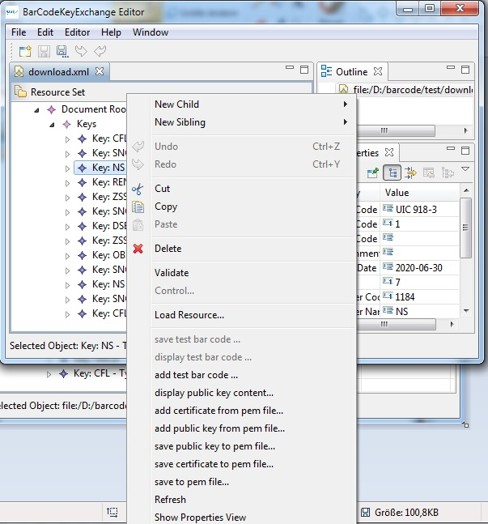

Menus
The application provides the option to add or extract test bar codes:
Functions to add a test bar code, to extract a test bar code and to view a test bar
code are included in the context menu of a selected key.


The file format png, jpg and bmp are supported. Please ensure that the bar code can be processed
by your application before you add it as test bar code.
Test bar codes images should be taken directly and
not be scanned from paper to ensure a good quality and small image size.